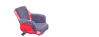
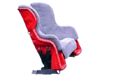

|
1e génération (Mai 1997)
Siège de fibre de verre ressemblant étrangement à une chaise de jardin pour enfant avec pattes tronçonnées. (Mille excuses Marie-Michèle)
Système de rétention/éjection sommaire.
Durée de l’essai : 350Km (pénibles)
|
|

|
2e génération (Juin 1997)
Siège de fibre de verre avec repose pieds et appui-tête utilisant le système de rétention/éjection précédent.
Durée de l’essai : 900Km (un pas dans la bonne direction). |
|

|
3e génération (Août 1997)
Siège de fibre de verre issu d’un moule (+grand et + esthétique). Même système de rétention/éjection que proto 1 et 2.
Durée de l’essai : 3800Km (pas pire du tout) |
|

|
4e génération (Mai 1998)
Fruit d’une cogitation hivernale entre le designer Gilles Laflamme et le concepteur Michel Martin.
Système de rétention/éjection amélioré.
Ajout d’un sac-à-dos amovible.
Durée de l’essai : 2700Km |
|

|
5e génération (Juin 1999)
Introduction du concept « siège dans le siège »
Harnachement du passager à la coquille éjectable en trois points. Coquille extérieure en fibre de verre.
Coquille intérieure en fibre de verre.
Coussin ergonomique
Système de rétention/éjection conçu, calibré et testé en ingénierie. Lors d’un impact imposant + ou – 1.5G au passager, la coquille intérieure se dégage de la coquille extérieur et devient un élément de protection supplémentaire pour ce dernier.
Durée de l’essai : 7000Km à ce jour (merveilleux, trop lourd, trop cher).
|
|

|
6e génération et production
Siège OVAK léger et économique (Mai 2000)
Coquille extérieure en polyéthylène (Twinsheet) thermoformé = 4 kilos versus 9 kilos en fibre de verre.
Portion ventrale du harnais allégée.
Création d’une housse de protection pour le siège.
Création d’une housse 4 saisons pour le passager.
Durée de l’essai : 10 000Km cumulés sur flotte de 4 motos au 1er août 2000.
|